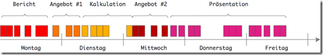

Tipps für mehr Produktivität und Zufriedenheit – Teil 5
Tipps für mehr Produktivität und Zufriedenheit – Teil 5
In den Tipps für mehr Produktivität und Zufriedenheit #4 habe ich Ihnen gezeigt, wie Sie mit der Tomaten-Methode Ihren Arbeitstag in Konzentrationshappen von 25 Minuten Länge einteilen können. Das ist lang genug, um wirklich konzentriert etwas zu schaffen und kurz genug, um Kollegen oder Kunden nicht zu lange warten zu lassen, bis Sie wieder einmal “auftauchen”. Die Tomaten-Methode ist ein pragmatischer Ansatz, um unvermeidliche Unterbrechungen und Fokus unter einen Hut zu bringen. Zusätzlich erhalten Sie damit ein simples Messinstrument für Ihre Produktivität. Denn unter der Annahme, dass nur konzentrierte Arbeit auch hochwertige, produktive Arbeit ist, sagt die Zahl der pro Tag geschafften Tomaten etwas darüber aus, wie sinnvoll Sie Ihre Arbeitszeit einsetzen.
Alles könnte jetzt gut sein, oder? Sie nehmen sich eine Aufgabe vor und arbeiten Sie in einer Sequenz von Tomaten ab, bis sie fertig ist. In jeder Tomate konzentrieren Sie sich. Zwischen den Tomaten bedienen Sie kurz die, die Sie sonst gestört hätten. Ihre Arbeitswoche könnte so aussehen:

Für jede Aufgabe reihen Sie solange Tomaten aneinander, bis sie erledigt ist. Das sichert die schnellstmögliche Aufgabenerledigung zu. Zwar zerhacken Sie die Aufgaben in Tomatenstücke; Sie konzentrieren sich also nicht in einem Rutsch auf die Abarbeitung, weil das ohnehin illusorisch ist. In Bezug auf eine Folge von Tomaten lassen Sie sich jedoch nicht beirren. Erste die eine Aufgabe, danach die nächste Aufgabe. Das hatte ich in Tipp #2 empfohlen. Widmen Sie Ihre Aufmerksamkeit immer nur einer Aufgabe – wenn schon nicht in jedem Moment Ihres Arbeitstages, so doch wenigstens über eine Folge von Tomaten hinweg.
So lautet auch weiterhin meine Empfehlung. Versuchen Sie so zu arbeiten. Ich arbeite in diesem Moment auch in der Weise. Diesen Text schreibe ich im Tomatentakt bis er fertig ist. Und erst dann nehme ich mir eine andere Aufgabe vor.
Leider ist diese Vorgehensweise für viele Arbeitsplätze nicht realistisch. Sie setzt nämlich voraus, dass die Aufgaben eine überschaubare Größe haben und zum Beispiel nicht länger als 1-2 Tage bzw. 10-20 Tomaten benötigen. Viele Aufgaben sehen hingegen so aus:
- Aufgaben dauern so lange, dass ihre Erledigung andere Aufgaben über Gebühr verzögern würde. Beispiel: Sie schreiben ein Buch; das dauert Monate. Währenddessen können Sie andere Aufgaben nicht liegenlassen.
Weitere Artikel

Puffer sichern Flow
Es wird allerhöchste Zeit, sich von der Idee, dass nur wer am Limit arbeitet, effizient sei, zu verabschieden. Unter Volllast, ganz ohne Puffer zu arbeiten ist eine „gute“ Voraussetzung für Unzuverlässigkeit, Fehler …

Kollaboration im Office mit Kanbanize
Ein Tool, was mich für die digitale Kollaboration im Office begeistert ist Kanbanize. Dort kann man wirklich sehr fortgeschritten und smart zusammenarbeiten. Mit seinen verschiedenen Perspektiven auf den Flow im Office, der …